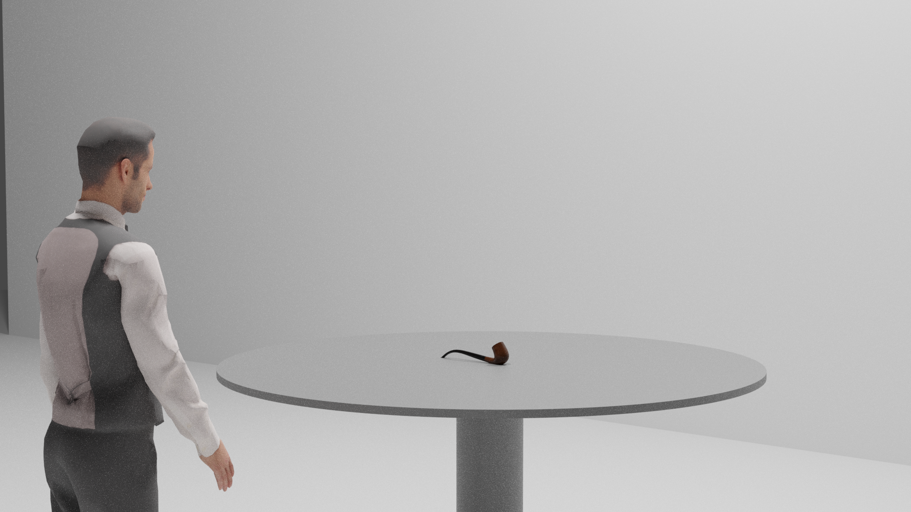
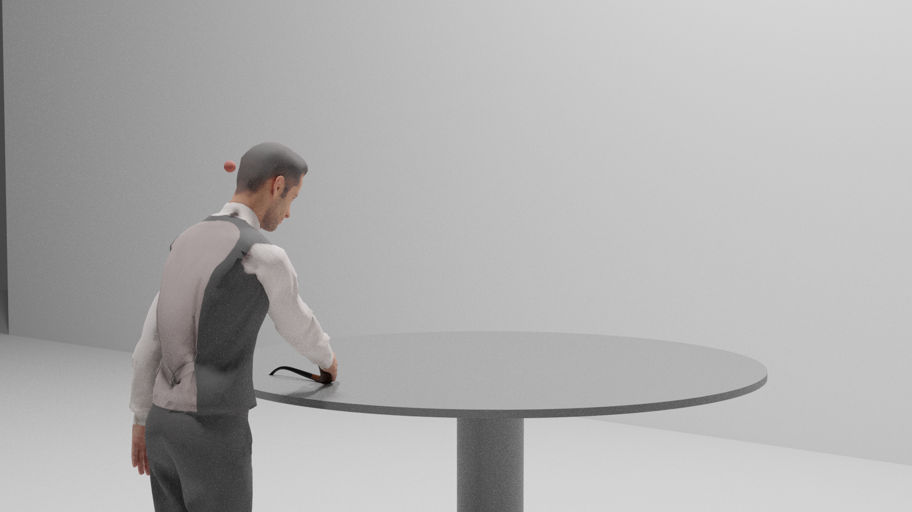
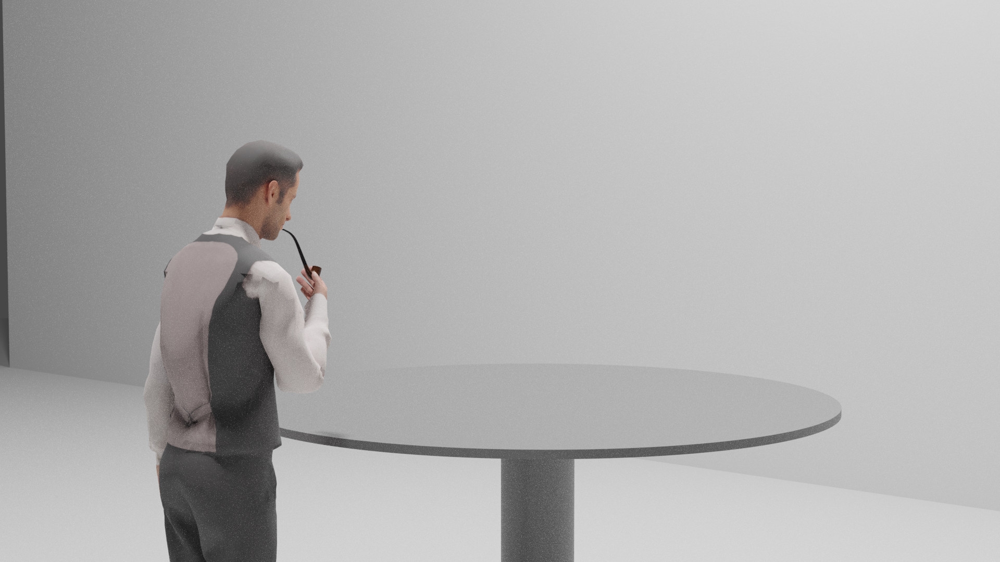
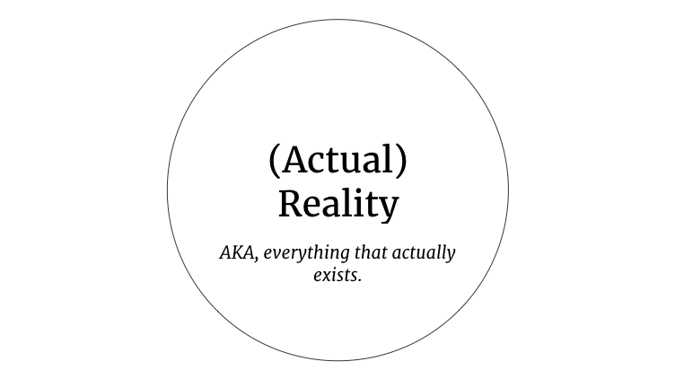
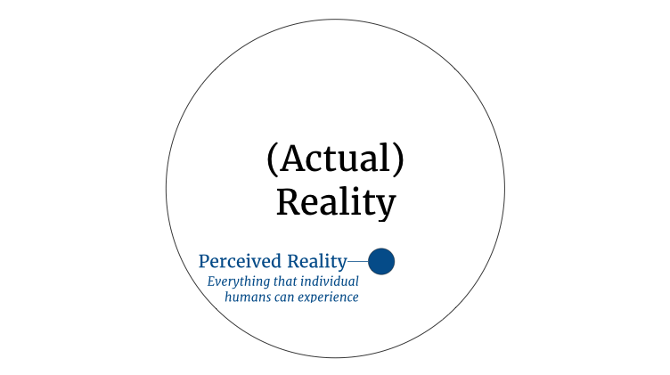
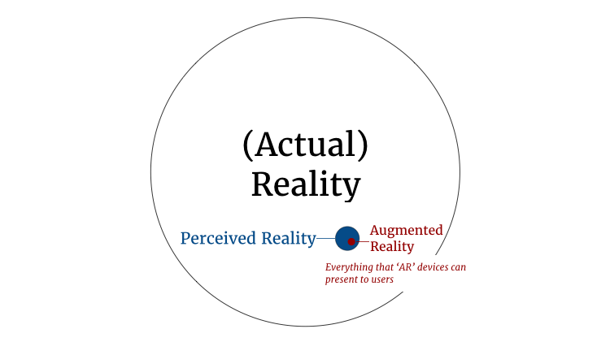

The Treachery of Augmented Reality
Over the last two years, I've been lucky enough to spend my time to exploring, prototyping, and designing experiences in Augmented Reality. As with any new medium, learning how to design for AR has involved trying to figure out both what kinds of experiences are optimal for the technology and the ideal process for creating those experiences.
There's a lot of unexplored territory in the AR space. On a practical level, that means that learning how to approach the design process means drawing from a lot of sources: lessons from other media, tutorials, blog posts, conferences, and just trying stuff out and seeing what sticks.
But one of the best lessons that I've gotten when it comes to designing augmented experiences comes from a ninety year old painting that doesn't really have anything to do with Augmented Reality per se: René Magritte's The Treachery of Images.

That's a painting of a pipe, with a caption that translates to “This is not a pipe.” Which is true: a painting of a pipe is not the same thing as an actual pipe. It's a representation of one.
Like a lot of Magritte's work, the painting was controversial when he painted it. At first, it makes the artist seem like what we'd today call a troll: he might be just trying to get a rise out of people by saying contradictory things. Or maybe the idea behind the painting seems so obvious that it's not worth saying at all; of course a two-dimensional painting of a pipe isn't a pipe. Nobody really confuses the two.
Personally, I love the painting. I love that Magritte is trying to force the viewer to be consciously aware of the difference between representations of reality and actual reality. And I especially love the title: the implication that there's something treacherous about imagery itself: that the act of creating an image is inherently deceptive.
While this might not be the artist's intended message, I think that the treachery is not meant to imply that artists are dishonest. Or that there's anything inherently wrong with creating images.
Rather, the treachery lies somewhere between the image itself and the person viewing it. The deception occurs when our minds—pattern matching machines that they are—fail to properly make a distinction between a realistically-painted pipe and a physical pipe; when we subconsiously forget that representations of reality are not reality.
Magritte understood that painters are always creating illusions that play with this confusion. That realistic paintings work when painters know how to accurately capture something about how actual objects, such as a pipe, look in the real world.
[Something about how there are things that they can't create]
When we create experiences for Augmented Reality, we have to act and think like artisans. We need to be consciously aware of the fact that virtual objects are not the same thing as their real-world equivalents.
But our goal is the actually the opposite of Magritte's. The intent of The Treachery of Images is to draw the viewer's attention to the artifice of the representation.
Our goal as Augmented Reality designers is to hide that artifice. In many ways, the quality of an Augmented Reality experience is defined by the extent to which users forget that virtual objects aren't real. A lack of awareness of the distinction between the real and the virtual is close to the textbook definition of immersion, and it's really, really important for AR experiences.
In order to create that sense of immersion, we need to understand how virtual objects are distinct from real ones. We need to know what conditions make that disconnect salient to users, and under what conditions those distinctions remain more or less invisible.
Armed with that knowledge, we can design experiences that minimize events that break immersion. We can avoid trying to create objects that just won't seem real to users. We can get the most out of the medium.
How is a virtual pipe distinct from a physical one? To start, let's think about a person interacting with an actual, physical pipe. Let's say that he's in a room with a table and the pipe itself, like this:
He may naturally walk over to the pipe, inspect it closely, and pick it up from the table.
And if this were the 1920s, he might even pack it with tobacco and smoke from it. (Presumably this is far less common today.)
A real pipe has physical presence, which is to say that it is made of atoms and exists in a specific place. As our user moves towards the pipe, it moves relative to him, but remains fixed in place relative to the rest of the room.
A real pipe responds to physical forces. When our user touches it to pick it up, he can actually feel it press down into his hands. It is affected by his hands, and moves precisely in response to his movements.
A real pipe has a natural use. Obviously, it's original use is outdated and bad. But let's just say that he's an actor playing Sherlock Holmes and pretending to ponder a mystery. There are things that users can and would do with the real thing.
* * *
Let's turn our attention to a virtual model of a pipe—the kind of thing that we can create in Augmented Reality experiences. To view this model, our user puts on a Head-Mounted Display, like this:
[IMAGE WEARING HMD]
- A virtual pipe is not a real pipe because it doesn't have physical presence. As he moves his head, it disppears and reappears. The real one doesn't do that. It also disappears as he gets close to inspect it. That's a bigger problem.
When we think about Augmented Reality experiences, we make that mistake all the time—or at least I do, and I see others do, too. Part of this might just be in the name: ‘Augmented Reality’ practically begs us to forget that what we're really talking about is using technology to mediate some user's perception of reality.
My point here isn't to quibble with terms or argue over semantics. But when it comes to desinging effective exeperiences for this medium, understanding what these experiences are actually capable of is vital.
Most of the design process itself, I believe, is rooted in understanding how to leverage the tiny sliver of reality that's actually accessible to AR technology. Effective experiences are only possible when designers focus on how Augmented Reality is distinct from actual reality.
One of the most important distinctions of those 
Whether through a head-mounted display, a mobile device, or projectors, Augmented Reality (or 'Mixed Reality', if you prefer) doesn't actually let us interact with anything other than a tiny sliver of reality. Today, the displays are very limited
Over the last two years, I've been lucky enough to spend my time to exploring, prototyping, and designing experiences using platforms like Apple's ARKit and Microsoft's Hololens. In that time, the single most important lesson I've learned is that, at least as far as experience design is concerned, ‘Augmented Reality’ is a terrible description for what these technologies are actually capable of.
‘Reality’ is a pretty broad concept. A fair definition for the word might be something like, “everything that exists”. It encompasses everything that is: the entire physical universe, every event that has ever occurred, and perhaps even ideas.
So if you think about it in terms of a Venn Diagram, ‘Reality’ is a giant circle that encloses everything.
But that big circle isn't really meaningful for designers. When we're making things for human use, we only care about the tiny little aspect of reality that humans can actually perceive.
Our perceptions are limited to our immediate surroundings. We can only experience the current moment in time. And our senses only take in a fraction of reality, and discard a surprising amount of that. So it seems reasonable to say that Perceived Reality is just a subset of (Actual) Reality:
But the ‘Augmented Reality’ devices that we have can't engage with the entirety of Perceived Reality. They obviously don't involve smell or taste at all. They only interact with the sense of touch in limited ways. And in surprising, perhaps even disappointing ways, they can only engage in a tiny subset of our senses of hearing, vision, and presence in space.
What we've come to call ‘Augmented Reality’ operates within a very small part of Perceived Reality:
At this point, I worry that it may sound like I'm making a semantic argument. That I'm just being pedantic, saying “Well, actually, words have very specific meanings and you need to be careful.... And there are very few things in the world more tiring and inane than semantic arguments.
But I think that these different levels of ‘reality’ really do matter. And the way that we think about them has a huge impact on what we imagine that they can—and should—be used for.
If you imagine that these technologies operate on the level of (Actual) Reality, or even Perceived Reality, then you're likely going to think in those terms. You'll be liable to observe any particular thing that exist in the world that you'd like to change, and then imagine that you can change them with AR. You might start imagining an entire, hidden universe where everything magically has a digital and physical component. Or you might start to confuse what it's like to see the world through a device with what it's like to see the world through your own eyes.
But effective design demands that you focus on the artifice. Understanding the disconnect between what humans can perceive generally, and what we can be presented with via the medium of so-called Augmented Reality is vitally important. These
If you spend any time searching for ‘augmented reality’ or related terms online, you're bound to run into all sorts of concepts that are rooted in an idea that an AR system has—or it least could have—an omniscient understanding of the physical world.
Kevin Kelly has written about the Mirror World, [GET BETTER QUOTE]“a high-resolution stratum of information overlaying the real world.” Rony Abovitz has discussed a ‘Magicverse᾿, a similar concept of a kind of digital map that corresponds on a one-to-one basis with the real, physical world.
It'd be silly for me to try to make a prediction as to whether these concepts will pan out. They're long-term visions that aren't really intended to be practical today.
But they're the kinds of things that you'd come up with if you focus on the reality part of ‘augmented reality’, if you were operating under the assumption that these systems can meaningfully interact with the world as a whole.
Thinking that big is a luxury you might have if you're a magazine editor, or it's a flight of fancy that you might indulge in if you're trying to sell a broad vision. But it's not a valuable way to think about these platforms if you're actually trying to make something with them.
Today—and for the foreseeable future—these systems have a very limited sense of the reality around them. It's sometimes possible to develop applications that recognize a small number of specific, pre-programmed objects, as is the case with ARKit's Object Recognition. Or you might be able to use GPS data to have some sense of where the user is on the surface of the Earth.
But that is a very far cry from being able to just arbitrarily recognize the space around the user and do anything meaningful with it. Unless you hard-code in information about specific environments, most of these systems will only be able to see the world as a sparse map of points and geometry.
The systems understand very, very little about the world on their own. Their knowledge about environments will undoubtedly improve over time, but there are dozens of truly hard problems to tackle before we could even start to think of them as having more than the crudest representations of reality.
This has major consequences for the design of experiences. You can't simply assume that there's some task in the world that can be easily replicated in augmented reality. You can't assume that a system will be able to recognize an object in a new space and immediately understand how to react with it.
One of the most common proposed use cases for augmented reality is in industrial settings. The thinking is usually something like this:
If everyone on the factory floor were outfitted with AR glasses, they could walk up to machines and instantly pull up schematics, manuals, and information about them. They could control the equipment directly, diagnose problems, and keep things running more smoothly. We'll save money and increase safety.
That's a great idea, in theory. And this particular use case might be relatively feasible, in limited circumstances. But the reality of creating an application like this gets very complicated, very quickly.
- You have to thing of where the machines are
- You have to define explicit mechanisms to identify the machines themselves
- Maybe object recognition will work, but what about machines that look similar?
- Maybe you can have marker-based AR, but how are you going to deploy it?
- You have to create explicit models of the machines. No system yet devised is going to be able to generate 3D representations just from looking at them.
- The point is that the system doesn't understand reality in any meaningful sense. It understands a microscopic portion of it that you as a designer have to state explicitly.
We humans are certainly not capable of grasping the entirety of reality. We can only take in only a limited amount of information, from a limited local space, through our senses. And then our brains discard a vast majority of even that little slice of wherever in the universe we happen to be at a given moment.
Which is to say that if you're designing experiences for human users, you shouldn't be focusing on reality, per se. You should be focusing on individual humans' perceptions of reality.
Yet it's a contradiction in terms to think of any medium that is capable of affecting a user's perception of reality directly. By definition, every medium mediates their experience of reality; and in the process things are removed, and information is discarded.
In theory, Augmented Reality devices should be able to map to a user's perception of reality more closely than other media. If they simply augmented subjective experiences of reality, perhaps they'd live up to the term and this entire essay wouldn't be worth writing.
Unfortunately, the systems that exist today—and the ones that could plausibly exist in the near-future—are nowhere near this standard.
The most popular form of ‘Augmented Reality’ to date has been mobile AR. And it probably goes without saying that the single most popular application has been Pokemon Go.
- Pokemon are realistically placed in the world only if you think a screen is an accurate representation of reality.
- But it isn't. The act of photographing a space compresses three dimensions into two. It quantizes light into a relatively small range of pixel values. It loses a lot of information in the process.
- And then the user has to go from experiencing the world as they normally do to experiencing the world as if it were a rectangle five inches across.
- That's not reality by any stretch of the imagination.
- And when you're designing you need to keep that in mind. You're not designing to change reality in any meaningful sense. You're designing to change a tiny little window of reality. And the user has to hold that, which has all sorts of ergonomic implications. And they're only going to have it active for a limited duration. It's a tiny perceptual stage!
It might be tempting to dismiss the last section by focusing only on head-mounted displays. Mobile AR is so obviously only a temporary stop on the way to the Augmented future, that the concerns will quickly fade away.
But these devices are media, too. And they are artifical in their own ways, which means that they, too, are a far cry from anything resembling reality.
I want to be careful in this section to distinguish between things that are temporary technical challenges—the kinds of things that can be solved with a few incremental innovations here and there—and things that are likely to remain challenges for much longer.
As an example of the former, the single biggest complaint that users have when it comes to devices like Microsoft's Hololens is the limited Field-of-View (FoV). For the unfamiliar, FoV refers to the angular size of the images produced by an optical device.
- Maybe you think of Mobile AR as little more than a stepping stone to true AR. That true AR looks more like the Hololens or Magic Leap.
- But those devices are a lot less like reality than they might appear
- First of all, the only senses that they even try to augment are sight and hearing
- Of course, both those devices and typical human experiences are primarily visual, so let's focus on that first.
- To what extent are these devices augmenting how we see the world? Well (at least for the time being), not very well. First, the most common complaint with these devices are there limited fields-of-view.
- Here's an example of the difference between what a normal human can see vs. what can be shown in one of these headsets.
- Experientially, this is much less like reality than the numbers might suggest. It's one thing to say that you can only see a little window into the world. But in the real world, people move around in space. They rotate their heads; they walk forward and backwards. So what happens? Objects just simply disappear from view.
- Nothing in reality behaves that way. Nothing. The random disappearance destroys the illusion of reality. I can't stress this enough.
- But even as fields-of-view improve (which will inevitably happen), other real issues exist. These include resolution, image opacity, chromatic aberrations, image brightness, light estimation, ambient dimming, and many others.
- So these will get better, and closer to reality over time. And they seem amenable to incremental solutions. But there's one major challenge that outweighs all of them, and will be harder to solve than any of them: the Vergence-Accommodation Conflict.
- The details of the VAC are a little beyond my scope here, but the important thing about it is that it means that it's only possible to place virtual objects at certain distances from the user.
- Just as objects leaving the devices Field-of-view disappear, objects that become too close or too far from the user simply disappear. Totally unlike objects in the real world.
- And this is an even bigger deal than any of the other problems, because it means that it isn't possible to display any virtual objects in the user's near-field.
- Basically, the rule-of-thumb is that if you can touch anything with your thumbs, you can't replicate it using an HMD. And in human experience, that's actually a very important--if not the most important--part of physical reality.
- Think about how much of the things you do in life happen in that range. Everything that you touch, everything that you move, everything that you examine closely. All of that disappears in an HMD. All of it.
- Why It Matters: None of this is close to reality, and if you focus your efforts on trying to replicate or augment things that humans typically do in reality, you'll be SOL.
Conclusion and Recap
- The Eames' once summed up their design philosophy as "design is the sum of all constraints".
- Augmented Reality doesn't exist today. It probably never will.
- Spatial Computing certainly does. And it's valuable. Focus on that and you're more likely to design effective experiences.
- Leave on a positive not about what Spatial Computing can do!